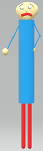

"Shy Larry" (or just "SL") was an old Arts and Crafters replacement for "Garrett's Funny!!!! Animal Game!"(/"GFAG").
Aliases
Shy Larry, Larry, SL.
Appearance
Shy Larry appears as a poorly modeled human with a weirdly shaped head, a VERY long body, short legs, very thin arms, ball-shaped hands, long eyebrows, and a frown. He wears a mask over his face, a light blue shirt, and red pants. When angered his mask falls off showing his bloodshot eyes, and sun-burnt skin.
Gallery

Trivia
Shy Larry is scared of Do You Accept.
Shy Larry likes to hide away from others.
Shy larry is very sun burnt, which is why he wears a mask.